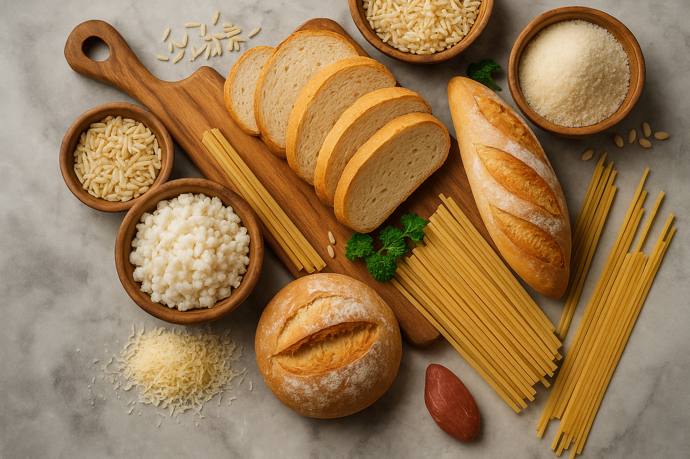
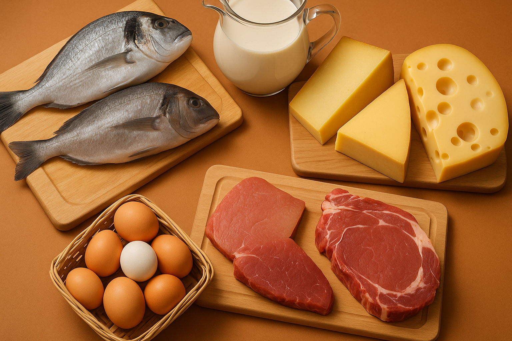
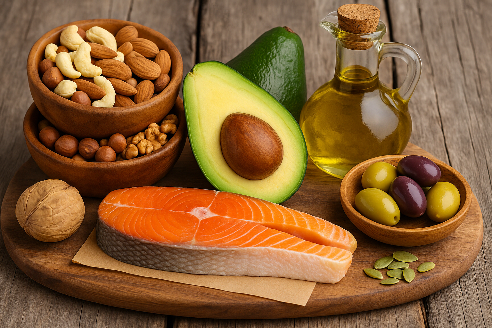

üß™ Compostos Orgânicos nos Alimentos
ü•ñ Carboidratos
Os carboidratos são compostos orgânicos formados por carbono (C), hidrogênio (H) e oxigênio (O), com uma razão empírica de 1:2:1. Eles são classificados em monossacarídeos (como glicose), dissacarídeos (como sacarose) e polissacarídeos (como amido e celulose). Carboidratos são importantes fontes de energia e participam de reações químicas na cozinha, como a caramelização e a reação de Maillard, que são responsáveis pela cor e sabor dos alimentos assados.
üçó Prote√≠nas
As proteínas são biopolímeros formados por aminoácidos, e desempenham funções vitais no organismo, como enzimas, hormônios e elementos estruturais. No preparo de alimentos, as proteínas podem sofrer desnaturação, alterando sua estrutura tridimensional, como no caso do cozimento de ovos, onde a clara se torna sólida e opaca.
ü•ë Lip√≠dios
Os lipídios são compostos orgânicos que funcionam como reserva energética e formam componentes essenciais das membranas celulares. Eles podem ser encontrados em alimentos como óleos, manteiga e carnes. Durante o preparo, lipídios podem sofrer oxidação, o que pode levar ao ranço, alterando o sabor e a qualidade nutricional.
üçä Vitaminas

As vitaminas são compostos essenciais para o organismo e são divididas em lipossolúveis (A, D, E, K) e hidrossolúveis (complexo B, C). Elas desempenham papéis cruciais no metabolismo e em funções biológicas, como antioxidantes e reguladoras do cálcio. As vitaminas têm estruturas químicas complexas, e algumas, como a vitamina C, são sensíveis ao calor e à luz, o que pode resultar em perdas nutricionais.